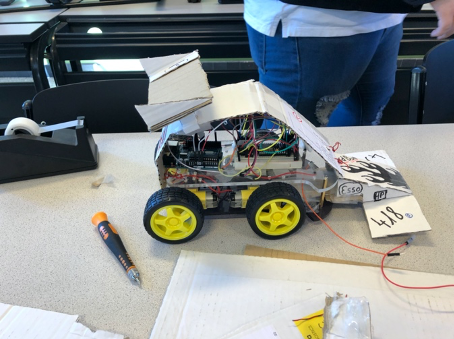
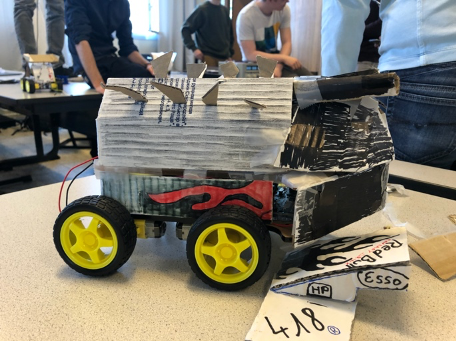
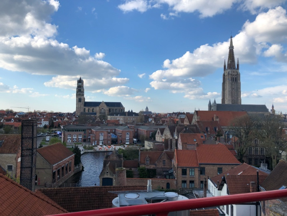

De eerste dag op Howest begon met een kennismaking. Tot mijn verbazing waren we met enorm veel internationale studenten onder anderen vanuit: Zweden, Spanje, Engeland, Italië, etc. We zijn diezelfde dag ook direct begonnen met de uitleg over hoe dat een Arduino werkt samen met een ‘breadboard’. Het was interessant om eens een inzicht te krijgen in de wereld van elektronica.
We hebben ons dan verder ingedeeld in groepen van drie à vier personen en konden dan beginnen met het in elkaar zetten van onze RC-auto. Elk team bestond uit twee of drie internationale studenten en één student van Howest. We kregen dan 4 dagen de tijd om onze auto in elkaar te steken.
De lector zelf had ook een grote passie voor IoT en bracht vele soorten kleine add-ons mee om toe te voegen aan onze RC-auto. We mochten zelf kiezen hoe deze eruit ging zien en welke features hij ging hebben. Om ons nog meer te stimuleren werd er ook een wedstrijd georganiseerd op het einde van de week, waarin dat iedereen tegen elkaar moest racen met hun zelfgemaakte RC-auto. De winnaar kreeg dan een prijs bestaande uit een paar snacks. Spijtig genoeg had ons team niet gewonnen, maar we zijn wel op de 3de plaats geëindigd.


Naast het bouwen van onze eigen RC-auto, hebben we ook veel culturele activiteiten gedaan. Zo zijn we ‘Brouwerij De Halve Maan’ gaan bezoeken. Deze brouwerij maakt het bekende bier ‘Brugse Zot’ en ‘Straffe Hendrik’. Het was zeer interessant om eens te mogen zien hoe dat dit nu allemaal in zijn werk ging.
De brouwerij zelf is een familiebedrijf wat al meerdere generaties in de familie zit. De structuur van de brouwerij is ook nog niet veranderd. Zo konden we zien hoe dat vroeger het bier werd gebrouwen. Op het einde van onze rondleiding mochten we proeven van de bieren die er werden gebrouwen, wat natuurlijk ook wel een fijn extraatje was. Wat zeker ook niet vergeten mag worden is dat de brouwerij een zeer mooi uitzicht had over de stad van Brugge.

Er was ook een rondleiding georganiseerd doorheen Brugge. Het was ook eens fijn om de minder toeristische plaatsen te verkennen. Doordat we goed weer hadden tijdens onze week hadden we ook een kanaaltocht gemaakt doorheen Brugge. Persoonlijk gezien was dit de minst fijne activiteit die we hadden gedaan. Zelf hebben we ook de moeite gedaan om Brugge te verkennen, vooral in de avond, samen met de studenten van Howest. Het was wel fijn dat ze de moeite deden om ons meer te laten zien van Brugge zelf.
Doorheen deze week sliepen we in de hostel genaamd ‘Bauhaus’. Dit was één van de gezelligste plaatsen waar ik al ben geweest. Reizigers van over heel de wereld kwamen hier samen. Aan onze hostel zat ook een café dat werd uitgebaat door dezelfde eigenaars van de hostel. Hier moesten we in de ochtend ook ontbijten. Het was dan ook altijd zeer gezellig in het café, waar dat iedereen samenkwam en vertelden over zijn of haar reisverhalen.
Voor de verplaatsingen binnen Brugge, kregen we een weekpas van De Lijn. Hiermee konden we heel de week gratis de bus nemen doorheen heel Brugge. Dit was zeer handig, omdat Howest aan de andere kant van de stad lag. Dit gaf ook soms wel wat stress, omdat we niet juist wisten welke bus we moesten nemen en waar de opstap was.
We hebben misschien niet ver gereisd voor onze BusIT-week, maar we hebben toch zeker veel bijgeleerd en veel mensen leren kennen. Ik ben dan ook zeer blij dat ik de kans heb gegrepen om naar Brugge te gaan.
Een paar dagen voor dat we moesten vertrekken was ik toch wat nerveus. Je moet nieuwe mensen leren kennen (en dan nog van een ander land). Gaat er geen taalbarrière zijn? Wat ga ik in de avond moeten doen? Hoe moet ik tot aan Howest geraken? Ik zat dus toch met wat vragen. Maar deze werden al snel vergeten toen ik aankwam in Brugge. Ik werd onmiddellijk goed ontvangen door de lector van Howest. Het stelde me ook wel gerust dat er ook nog andere leerlingen waren van PXL.
Doorheen de week heb ik ook enorm veel bijgeleerd over Arduino’s en Raspberry Pi’s. Hoe je ze moet gebruiken en hoe je, je code kan uploaden naar de Arduino/Raspberry Pi. Mijn softskills zijn ook verbeterd doordat ik naar Brugge ben geweest. Zo is het nu makkelijker om een gesprek aan te gaan met mensen die ik nog niet ken.
Er waren toch wel wat linken met de opleiding op PXL. Zo hebben we geleerd hoe dat je code schrijft die dat draait op een Arduino. De lessen zelf waren ook eigenaardig aan die van de PXL.
Ik ben enorm blij dat ik deze activiteit heb kunnen doen door PXL. Het was een week waar ik veel in heb bijgeleerd. Ik heb vele mensen leren kennen en mijn communicatie skills kunnen verbeteren. Het is een activiteit die ik zo terug opnieuw zou doen.